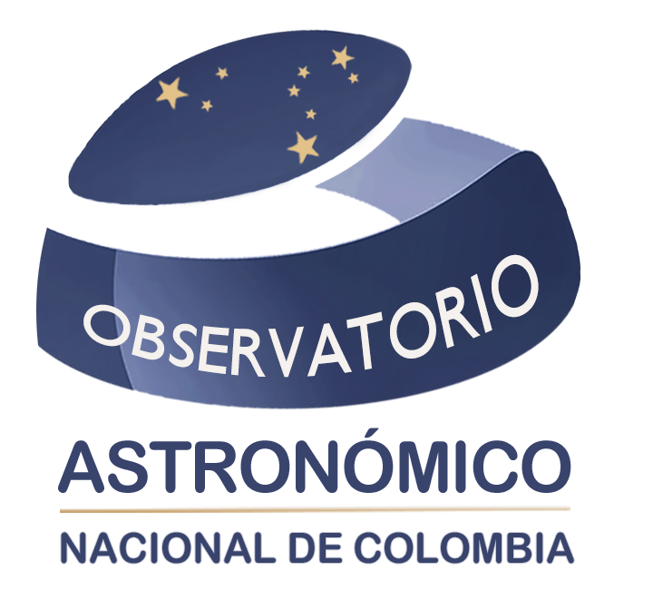

Benjamín Calvo Mozo
Física solar

OAN1803ObservatorioPROFESORES
Conoce las áreas de trabajo y los canales académicos de contacto.
Una comunidad docente con caminos de investigación que van del Sol y las estrellas a la gravitación y la historia de la ciencia.
Fuente: Directorio docente oficial del OAN ↗.
Física solar
Agujeros negros; astrofísica computacional
Astrofísica estelar; astronomía y desarrollo
Cosmología, gravitación y simulaciones
Galaxias activas; historia de la astronomía
Termodinámica de agujeros negros
Cosmología
Cosmología
Galaxias activas; historia de la astronomía
Física solar, instrumentación y geomagnetismo
Los perfiles completos, la formación y las hojas de vida se consultan en el directorio oficial. La aparición en este listado reproduce la publicación institucional y no certifica disponibilidad de dirección de tesis.